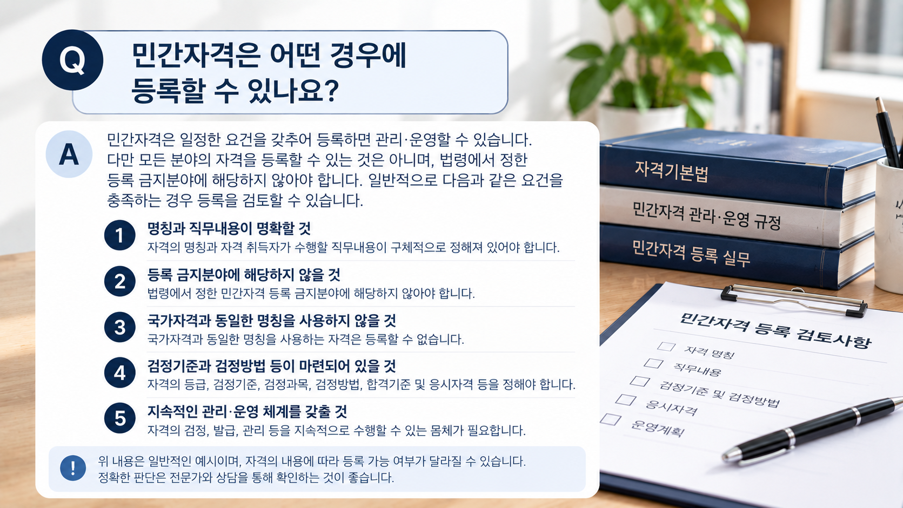
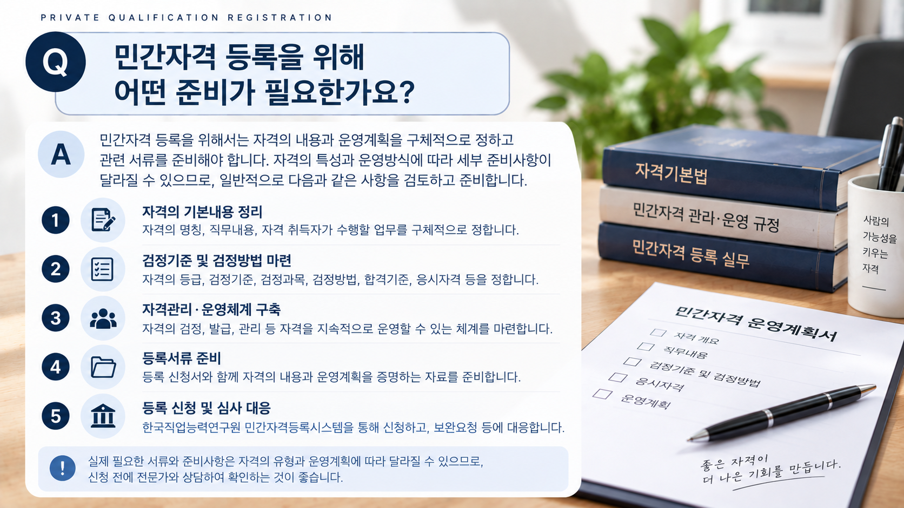
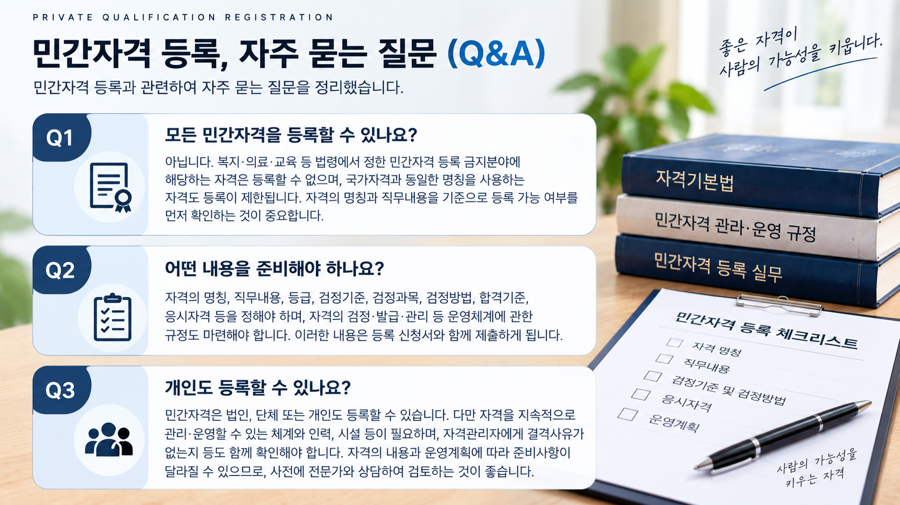

01. 민간자격이란 무엇인가요?
민간자격은 국가 외의 법인·단체 또는 개인이 신설하여 관리·운영하는 자격을 말합니다.
다만 모든 분야에서 자유롭게 민간자격을 신설할 수 있는 것은 아니며, 법령에서 정한 등록 제한사항을 함께 확인해야 합니다.
등록과 공인은 다릅니다.
민간자격의 등록과 국가가 일정한 요건을 갖춘 민간자격을 인정하는 공인은 서로 다른 제도입니다.

02. 등록 전에 무엇을 먼저 확인해야 하나요?
자격의 명칭을 결정하기 전에 해당 자격이 어떤 직무를 수행하기 위한 것인지 구체적으로 정리하는 것이 중요합니다.
| 확인사항 | 주요 내용 |
|---|---|
| 자격명 | 등록하려는 자격의 명칭 |
| 직무내용 | 자격 취득자가 수행하게 될 업무 |
| 등급 | 단일 또는 복수 등급 운영 여부 |
| 검정 | 검정기준·과목·방법 및 합격기준 등 |
| 운영 | 검정·발급·관리 등 자격 운영체계 |
03. 모든 분야의 자격을 등록할 수 있나요?
그렇지 않습니다. 「자격기본법」에서는 일정한 분야에 대해서는 민간자격을 신설하여 관리·운영할 수 없도록 하고 있습니다.
따라서 등록하려는 자격의 명칭만 볼 것이 아니라 실제 직무내용을 기준으로 등록 금지분야에 해당하는지를 확인해야 합니다.
또한 국가자격과 동일한 명칭을 사용하는 경우에도 제한이 있으므로 자격명을 정할 때 확인이 필요합니다.
※ 관련 근거 : 자격기본법 및 같은 법 시행령
04. 어떤 내용을 정해 두어야 하나요?
민간자격 등록을 준비할 때에는 자격의 기본내용과 함께 실제 검정을 어떻게 운영할 것인지 구체적인 기준을 마련해야 합니다.
- 자격의 종목 및 등급
- 자격 취득자가 수행하는 직무내용
- 검정기준
- 검정과목
- 검정방법
- 응시자격
- 자격의 관리·운영방법
교육훈련과정을 통해 자격을 운영하는 경우에는 해당 운영방식에 맞는 기준을 별도로 검토해야 합니다.
※ 구체적인 등록사항은 자격기본법 시행규칙에서 정하고 있습니다.

05. 어떤 자료를 준비하나요?
실제 신청자료는 자격의 유형과 운영방식에 따라 달라질 수 있지만 일반적으로 다음과 같은 내용을 준비하게 됩니다.
- 민간자격 등록신청에 필요한 기본자료
- 자격의 명칭·등급 및 직무내용에 관한 자료
- 검정기준과 검정방법 등에 관한 자료
- 자격관리·운영에 관한 자료
- 신청기관 또는 신청인 관련 자료
- 그 밖에 자격의 내용에 따라 필요한 자료
내용의 앞뒤가 일치해야 합니다.
자격의 직무내용과 검정과목, 검정기준 및 실제 평가방법은 서로 연결되어야 합니다. 신청내용 사이에 불일치가 있으면 추가 확인이나 보완이 필요할 수 있습니다.
06. 등록은 어떤 절차로 진행되나요?
민간자격 등록은 자격의 내용과 소관 분야를 확인한 후 관련 자료를 갖추어 신청하는 방식으로 진행됩니다.
※ 실제 등록은 민간자격정보서비스를 통해 신청하며, 자격 분야별 소관 주무부처의 검토가 이루어집니다.

07. 등록할 때 특히 주의할 점은 무엇인가요?
자격명보다 직무내용이 중요합니다.
같은 분야처럼 보이는 자격이라도 실제 직무내용에 따라 소관 부처와 등록 가능 여부가 달라질 수 있습니다.
동일한 민간자격명이 존재할 수도 있습니다.
이미 등록된 민간자격과 동일한 명칭의 자격이 존재할 수 있으므로 자격명만으로 기존 자격과 동일한 자격이라고 판단해서는 안 됩니다.
등록이 자격의 우수성을 의미하는 것은 아닙니다.
민간자격 등록은 해당 자격이 국가에서 공인한 자격이라는 의미와는 다릅니다. 등록 민간자격과 공인 민간자격은 구분하여 이해해야 합니다.
08. 신청 전 체크해 보세요.
- 자격의 명칭이 정해져 있습니까?
- 자격 취득자의 직무내용이 구체적입니까?
- 등록 금지분야 해당 여부를 확인하셨습니까?
- 국가자격과 동일한 명칭인지 확인하셨습니까?
- 등급과 검정기준을 정하셨습니까?
- 검정과목과 검정방법을 정하셨습니까?
- 응시자격과 합격기준 등을 검토하셨습니까?
- 자격을 지속적으로 관리·운영할 체계를 마련하셨습니까?
아직 정하지 못한 항목이 있더라도 바로 등록이 불가능하다는 의미는 아닙니다. 자격의 내용과 운영계획을 검토하면서 필요한 사항을 순차적으로 준비할 수 있습니다.
민간자격 등록을 준비하고 계신가요?
먼저 자가진단으로 현재 준비상황을 확인하거나 상담을 통해 등록에 필요한 사항을 검토해 보세요.